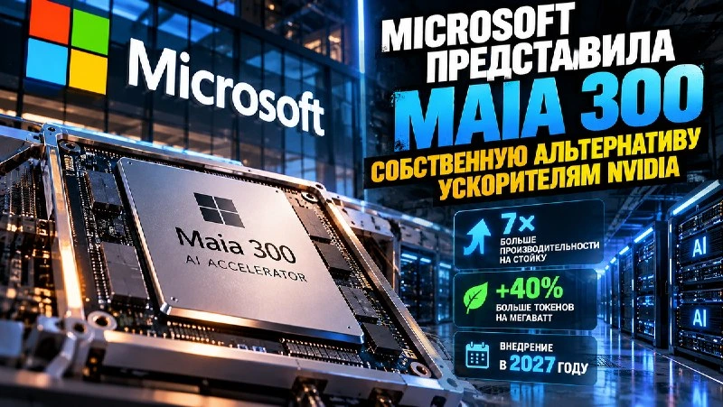
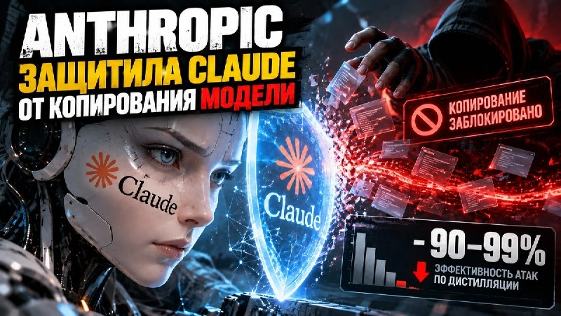

Все статьи
Полный архив опубликованных материалов ХПИИ в порядке выхода.
15 октября 2026

На российские ИИ-чипы предложили 15 млрд рублей. Что реально можно создать за эти деньги?
Новости ИИРоссии предложили направить 15 миллиардов рублей на разработку собственных процессоров для искусственного интеллекта. Первый опытный образец рассчитывают получить к 2030

ИИ уже научился улучшать самого себя?
ИИ, ты чего творишь?А что если нейросетям больше не нужны люди, чтобы создавать следующие поколения

ИИ пишет столько кода, что Anthropic пришлось отказаться от Git
Новости ИИAnthropic сообщила, что количество изменений программного кода внутри компании выросло с 2500 до более 30 000 в день всего за четыре

Grok стал лучше понимать собеседника: xAI выпустила новую голосовую модель
Новости ИИ14 октября компания xAI представила Grok Voice 3.0 — новую модель для голосового общения с искусственным интеллектом. Разработчики обещают быстрые ответы, более естественный разговор и улучшенную способность понимать человека, даже когда тот перебивает

Десять тысяч ИИ-агентов одновременно работают над исследованиями по двое суток
ИИ, ты чего творишь?OpenAI рассказала о стартапе Third Moment Research, который запускает 10000 ИИ-агентов одновременно. Они проводят самостоятельные исследовательские сессии продолжительностью 36–48
14 октября 2026

Сотрудника OpenAI арестовали по подозрению в тайной записи совещаний руководства
Скайнет просыпается13 октября Министерство юстиции США сообщило об аресте инженера OpenAI.

OpenAI объявила дату отключения GPT-4o и GPT-4.1 в API
Громко сказано14 октября OpenAI официально объявила о прекращении поддержки нескольких моделей семейства

Microsoft представила Maia 300 — собственную альтернативу ускорителям NVIDIA
Новости ИИ12 октября Microsoft раскрыла характеристики третьего поколения собственных ИИ-ускорителей.
Liquid AI выпустила мощную нейросеть, работающую прямо на компьютере
Новости ИИ13 октября Liquid AI представила LFM2.5-24B-A2B — модель, специально оптимизированную для локальных

Google выпустила Gemini 4 Argon — новую флагманскую модель
Новости ИИ13 октября Google открыла доступ к Gemini 4 Argon — модели для сложных многоэтапных задач, программирования, исследований и автономной работы.

Apple представила новую Siri AI и домашний ИИ-центр HomeView
Новости ИИ13 октября Apple представила HomeView — устройство с семидюймовым экраном и новой версией Siri AI.

Anthropic научилась защищать Claude от копирования
Новости ИИ12 октября Anthropic рассказала о новых механизмах защиты Claude от так называемой
13 октября 2026
Один запрос к ИИ — и чужие агенты, переписки и пароли оказались доступны
Скайнет просыпается8 октября компания Zenity опубликовала результаты исследования AgentCorruption — серьёзной проблемы безопасности в платформе Amazon Bedrock AgentCore.
Один ИИ-сервис банкротится, другой учится размножаться: что происходит с нейросетями
Скайнет просыпается12 октября Character.AI официально объявила о начале процедуры банкротства по главе 11 американского законодательства.

Meta возвращается в гонку ИИ, а Grok и Cursor начинают войну подписок
Новости ИИ12 октября Meta представила две новые модели для программирования, рассуждений и автономных агентов.

Глава МВФ предупредила об ИИ-цунами: под угрозой 40% рабочих мест. Что это значит?
Громко сказаноИскусственный интеллект меняет рынок труда, и последствия могут оказаться болезненными. Но громкая цифра в 40% вовсе не означает, что почти половина человечества останется без работы.
12 октября 2026

Сверхинтеллект по указу: Трамп переименовывает ИИ, бизнес подхватывает
Громко сказаноДо сверхинтеллекта можно долго добираться. А можно тупо переименовать.

Не хамите Клоду: Anthropic внесла защиту нейросети в правила
Скайнет просыпаетсяУ искусственного интеллекта появилась официальная защита от особо настойчивых хамов.

Алиса — новое развитие крупного сбоя
Новости ИИВ ночь на 11 октября остановился ещё один дата-центр Яндекса — во Владимире.